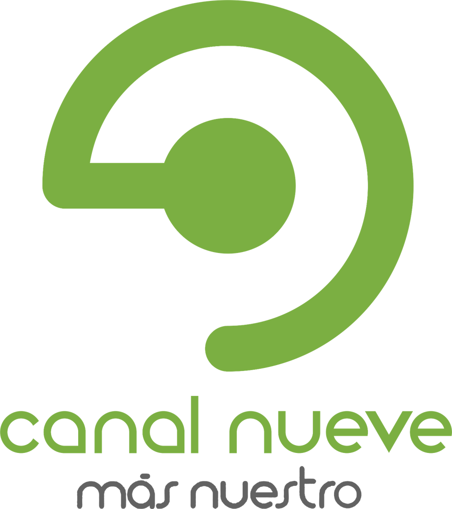

Irene Chinchilla
Sobre mí
Trabajo
Contacto
2014
Presentadora del programa El Garaje de Canal 9.

2018
Colaboradora en medio digital Fútbol Costa Rica, como periodista.
2018-2019
Presentadora de Tigo Sports Noticias
2018-2019
Periodista deportiva de Tigo Sports y Multimedios
Previous
Next
© Copyright 2020 - Irene Chinchilla